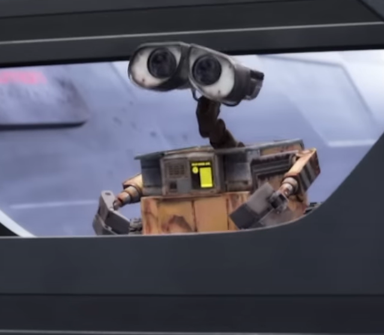
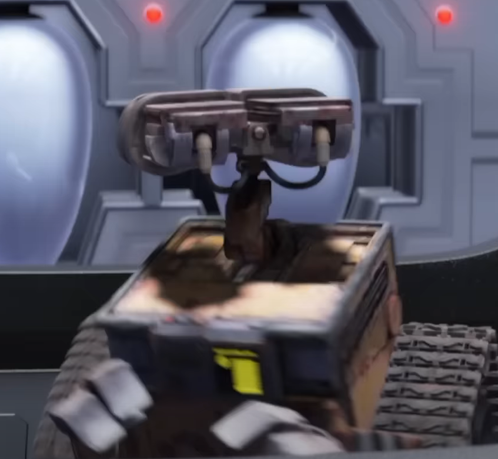
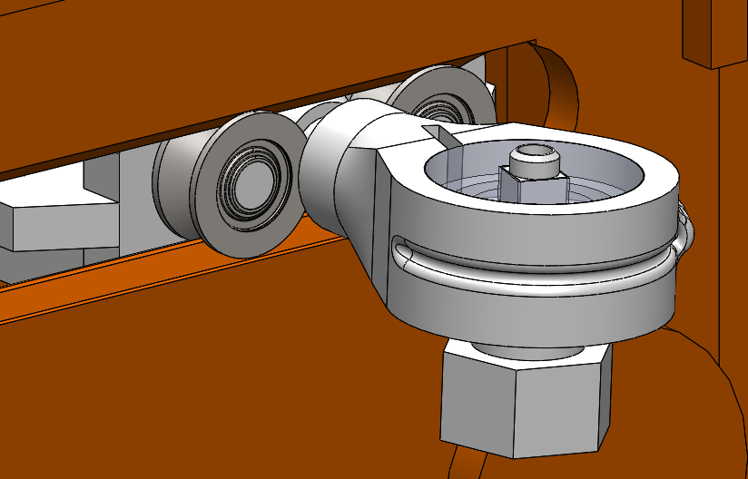
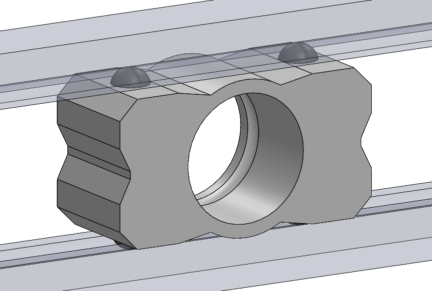
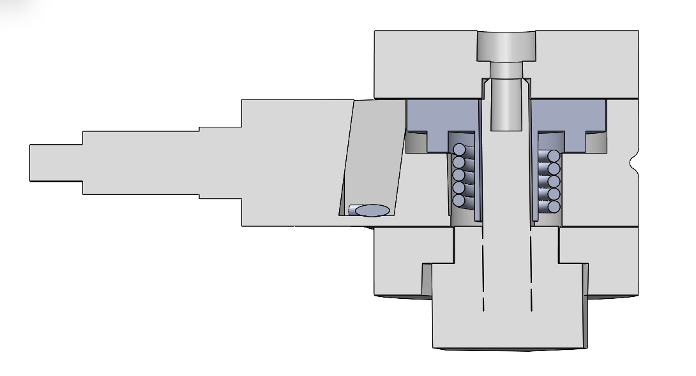
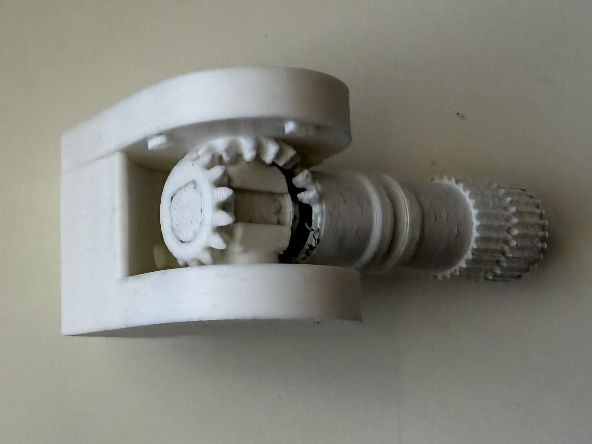
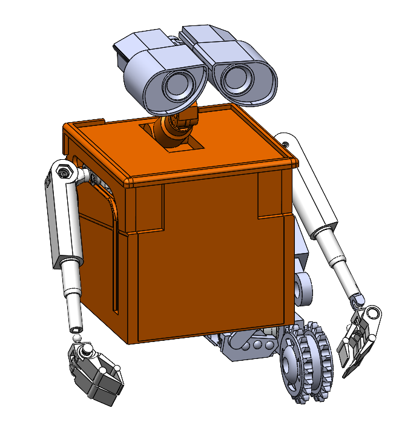
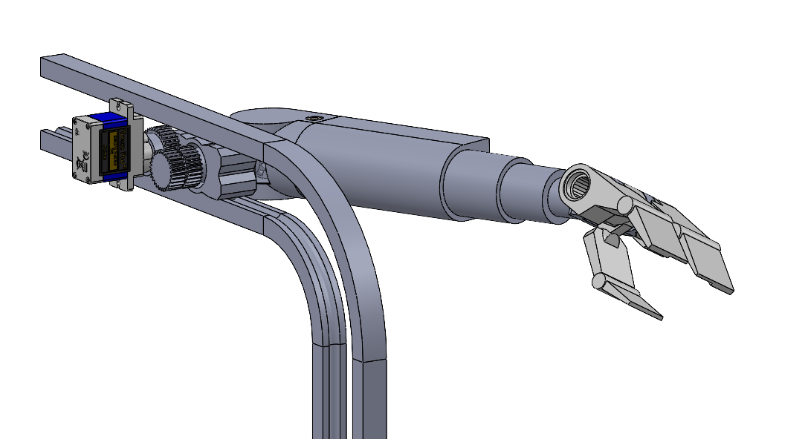

I embarked on my Wall-E robot personal project to explore miniture robotics. Along the way, I discovered why many Wall-E recreaters don't include the facially simple shoulder movement which I find to be a salient feature of a lively and expressive Wall-E.


In the movie, Wall-E's shoulder moves along an L-shaped path on his side, and I think adds a lot to his expressiveness. In the early stages of this project, I decided this was one of the degrees of freedom I wanted to robotically articulate. Although this is very a very simple mechanism for the movie's animators to create, they were not limited by the harsh realities of the physical world.
I quickly discovered that this motion was going to be the greatest challenge of the project, and most of my effort thus far has been to engineer a suitable solution.

My initial prototype utilized cheap v-bearings sitting with a track on either side, and the shoulder pivot going between the tracks, as pictured above. After printing out the components and doing preliminary testing, I determined that the v-bearings I purchased had an unacceptable amount of wobble to them, which prevented the cart from moving rigidly as intended.

To remedy this, I moved to a different design using small POM balls wedged between the tracks, acting as a much more compact version of the v-bearings which I could preload with springs and, importantly, include on the top and bottom of the cart (2 on the top, 2 on bottom). Results from this method still need testing.

In order to fit two rotational DOF into the small sholder joint (30mm diameter), and ensure the mechanism would fit between the narrow tracks, I originally went with a bowden cable and spring return mechanism. In this configuration, a cable would pull on the shoulder to swing the arm out like a t-pose, and when the cable is released, a torsion spring would return the arm to its more forward-facing position. While this design could have worked, the small scale and 3d printed parts meant that the arm didn't have the necessary swing range due to the spring inner diameter shrinking as it gets twisted (crushing a critical support), and the spring gave far too much resistance than the cheap servo to handle.

To get around these limitations, I redesigned the entire shoulder to utilize a bevel gear differential system. This combines the motion of two servos into the two motions the arm needs to conduct, which provides a few benefits. First, the combined torque of two servos is used to lift the arm up and down, which should theoretically improve the max weight capacity of the arm. Second, it means that there are zero parasitic forces (like a spring) requiring a constant torque to be provided by a servo other than the weight of the arm. This should improve the performance of the arm.
After testing with a purely 3d printed and high-surface-contact design, I determined that the friction within the system would significantly inhibit the ability for a servo to rotate the arm outward. To remedy this, I plan to replace much of the plastic-plastic contacts with metal ball bearings which have the potential to drastically reduce friction in the system, and allow all of the components to rotate freely.

